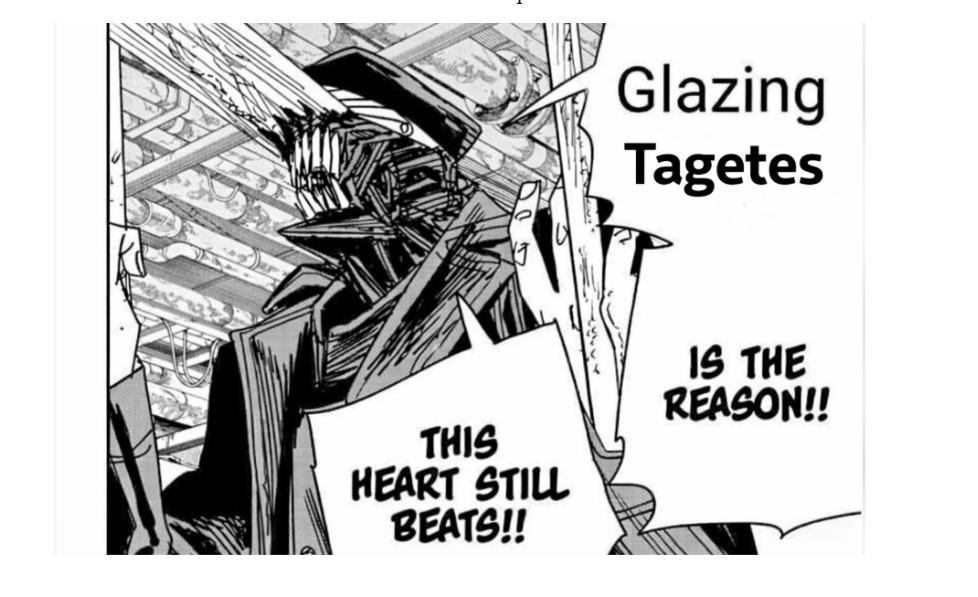
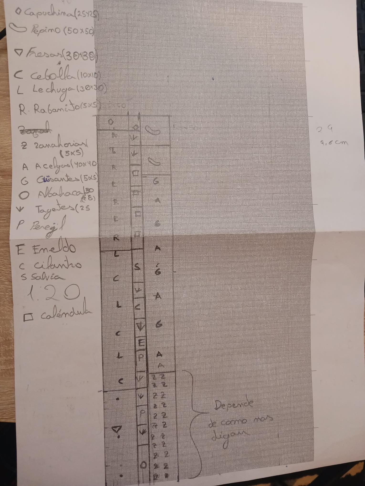
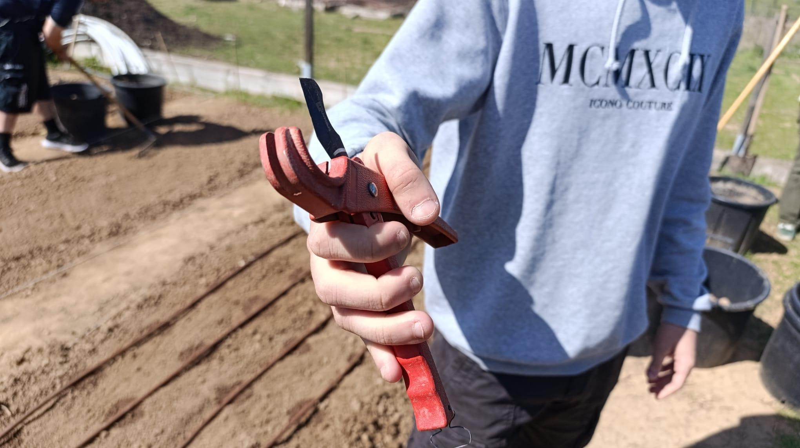
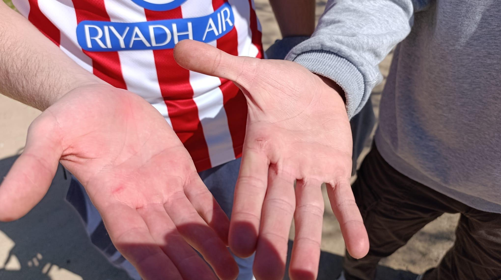
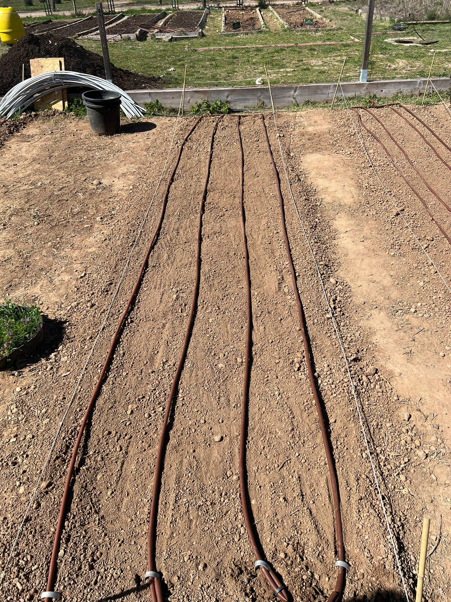
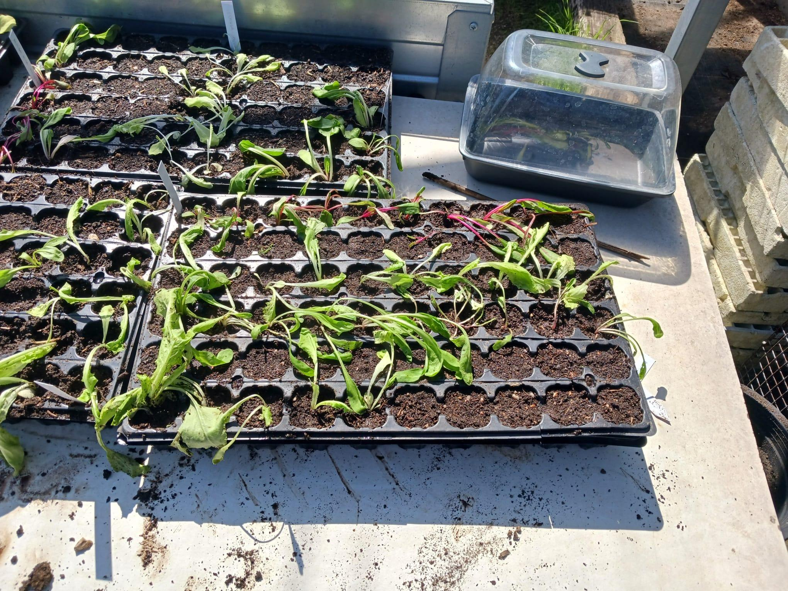

Nota: Esta entrada del diario ha sido redactada por Noel (Día 5) e Iván (Día 6).
Quinto día (escrito por Noel)
Ya en la tercera semana desde que empezamos a cavar, el quinto día de trabajo fuimos a ver cómo andaba nuestro huerto, después de hacer un difícil examen de Auditoria ambiental. Aunque, antes de entrar al examen, vino Silvia y nos dio a cada uno las galletas que nos había dicho que nos daría por ayudarles el día anterior, que por cierto estaban bien de buenas, así que de nuevo muchas gracias. Como sabemos que Alberto, de alguna manera u otra, siempre consigue ser el último en acabar cualquier examen, Iván, el dictador de Juan Carlos y yo, Noel, decidimos ir yendo y esperar a Alberto en el huerto. Cuando llegamos nos encontramos con que la tierra estaba más dura que un día sin pan, así que nos pusimos a darle ligeramente con la azada y posteriormente con el rastrillo para quitar la grama superficial que nos habíamos dejado el día anterior.
Posteriormente vino Silvia, la profe, y estuvo conversando con nosotros sobre la asignatura en general y lo avanzados que íbamos en nuestro bancal. Después de eso volvimos a ayudar a Silvia, pero ahora la alumna, con su bancal, ya que estaba sola ese día y aún le quedaba un buen cacho por terminar. Iván volvió a demostrar por qué se hace llamar grama-man, y yo poco a poco voy forjando la leyenda de azada-man, demostrando una habilidad innata para usar esta maravillosa herramienta. Cabe recalcar que Alberto por algún motivo terminó el examen, y en lugar de mirar el móvil como cualquier persona normal haría para ver si sus maravillosos amigos le habían escrito algún mensaje, pensó que sería buena idea irse directamente a la renfe y mirar el móvil una vez subido al tren, así que no acudió al huerto ese día.
Al rato de estar ayudando a Silvia vino Adolfo y nos mandó a todos para la caseta de madera, donde realizamos un taller en el cual nos explicó lo que sería ideal plantar en esta época del año, y las cosas a tener en cuenta. Iván, Juan Carlos y yo le enseñamos la distribución de huerto que habíamos pensado, aunque para ser sinceros la hizo Juancar enterita. Después de estar un rato comentándola, Adolfo dijo que en principio le daba luz verde a las plantas que habíamos escogido y la distribución que habíamos pensado. Y afortunadamente para Juan Carlos, Adolfo le dijo que el Tagetes sería una muy buena opción por su rol contra las plagas de nemátodos.

Imagen 1: A Juan Carlos le gustan mucho los Tagetes así que me pidió que pusiese esta imagen en el blog

Imagen 2: distribución del bancal acordada (en principio) con Adolfo
A partir de aquí, por mucho que me duela, el día 6 lo contará Iván, ya que no pude asistir a clase al día siguiente. También cabe recalcar que podría haber usado esta parte del blog para devolver todo el odio dirigido hacia mí de manera humorística, pero como soy un tío chill he decidido no hacerlo.
Reflexiones:
- Nos hemos dado cuenta de que somos unas maravillosas personas, ayudando a aquellos que lo necesitan sin pedir nada a cambio (aunque las galletas son bienvenidas)
- Silvia hace unas galletas que están de rechupete
- La tierra del huerto estaba más dura que el propio examen, pero la técnica lo es todo.
Día 6 (escrito por Iván)
Bueno pues, debido a la ausencia de Noel, me toca a mi hablar un ratillo de lo que hicimos el jueves. El día consistió en el taller de riego, el cual como bien dice el nombre, consiste en instalar unas tuberías para regar nuestros cultivos de manera automática.
Antes del taller, tuvimos que aplanar el bancal para evitar que el agua se desplace hacia las zonas más bajas y que se produzcan encharcamientos, ya que nuestro bancal parecía un tobogán. Una vez que lo dejamos medio arreglado, se produjo una explicación teórica bastante clara por parte de un jardinero, lógicamente, para que supiesemos qué y cómo hacerlo. A su vez nos enseñaron los materiales que íbamos a utilizar, que eran básicamente las mangueras de goteo y cómo funcionaba, que básicamente se programaba a la hora que se quería que saltase el riego gracias a un aparato y un acople que hizo el propio jardinero en una de las tuberías del Jardín Botánico.
Tras la explicación nos tocó ponernos manos a la obra a los 3, aunque Juancarlos no tardaría en dejarnos plantados (nunca mejor dicho) a Alberto y a mí para ir a plantar un par de lechuguitas. Éramos Alberto y yo contra el mundo, aunque bueno, Juan Carlos ayudó a poner un par de tuberías, todo sea dicho. Empezó Juancar cortando los tubos con la herramienta que nos dieron, que ahora mismo no me acuerdo de su nombre pero era una especie de tijera rara.

Imagen 3. El arma para cortar los tubos
Bueno, nos llegó a nuestro poder este arma, y Juan Carlos, como buen delegado que es, se ofreció a cortar el primer tubo, pero debido a la letalidad de esta herramienta (o también influirá en algo que no nos pusimos guantes) se pilló la mano. Vale pues unos 30 segundos después le pido a juancarlos el cortatubos, por que mi yo del pasado pensaba que no era tan fácil pillarte la mano, pero bueno, dicen que el hombre no tropieza dos veces con la misma piedra, pero aquí estamos nosotros para cambiar los dichos. Lógicamente acabó pasando lo que tenía que pasar.

Imagen 4. He aquí las heridas de guerra (casi ni se llegan a apreciar)
Así que bueno, a lo importante. La instalación de los tubos se nos hizo bastante amena, lo único que se nos complicó fueron las primeras medidas porque estábamos aprendiendo, pero una vez le pillamos el tranquillo, nos quedó muy bien. Resumidamente, alberto cogía el tubo, que estaba enrollado, y lo iba soltando poco a poco para que no se enrollase, mientras que yo estaba en el otro lado aguantándolo, y cuando ya teníamos la medida adecuada, lo cortábamos y lo metíamos bien en el acople para que no se escapase el agua.

Imagen 5. Nuestro bancal con los tubos de riego por goteo ya instalados
Por último, Juan Carlos fue a trasplantar lechugas y acelgas para poder ponerlas en nuestro bancal cuanto antes, aunque yo creo que lo utilizó como excusa para no agachar el lomo.

Imagen 6. Las lechugas y acelgas trasplantadas
Reflexiones:
- Darnos unas tijeras de esas a nosotros es como darle una pistola a un mono
- Seguimos obsesionados con la grama
- Gracias a Alberto va a funcionar el riego porque fue el único que se dio cuenta que había agujeros cerrados
- Cada vez nos va gustando más esta asignatura
- Noel sigue sin trabajar
- Este taller era de los más importantes, porque si la lías, arruinas todo tu trabajo